2026 Terra
Earth School
Urban-Rural Co-Creation and Sustainable Food & Ag: Waseda × NTHU Cross-border Action × AI-Collaborative Design Thinking
A field action in Yilan by Waseda and Tsinghua University youth. Exploring sustainable food & agriculture at the boundary of land and AI.

Documentary
5-Day Field Learning Journey
Our field practice footprint in Yuanshan, Nanao, and Fo Guang University
Day 1 | NCCU International Forum: Encounter of Taiwan-Japan Youth & Launch of Transnational Teams
Taiwanese and Japanese youth gathered at National Chengchi University to start their five-day journey from the "Urban-Rural Co-creation and Sustainable Agri-food" forum. Through presentations by practitioners from various fields, they learned about the diverse possibilities of agriculture, locality, and technology. Notably, during the forum, all participants used Terra's exclusive eco-friendly tableware along with lunchboxes provided by the NTU Circular Lunchbox Project, practicing green sustainability and plastic reduction through concrete actions. In the evening, they traveled to Nanao, where they formed transnational teams through icebreakers and open discussions, selected their exploration topics, and set the stage for their upcoming field actions.
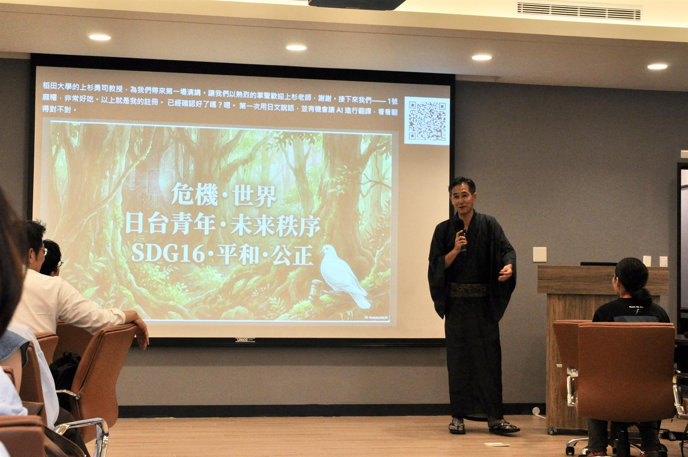
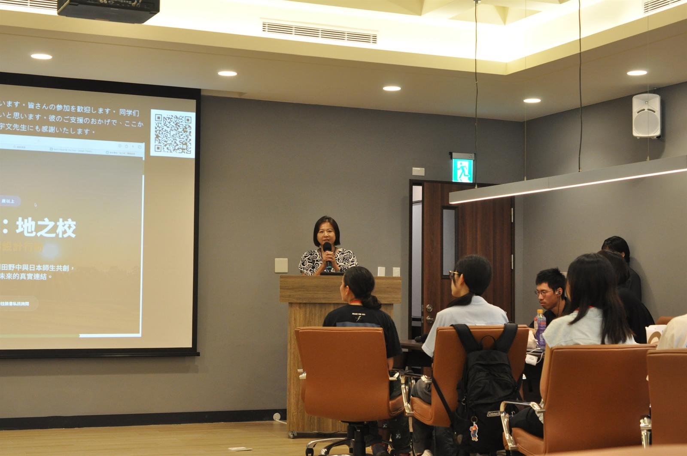
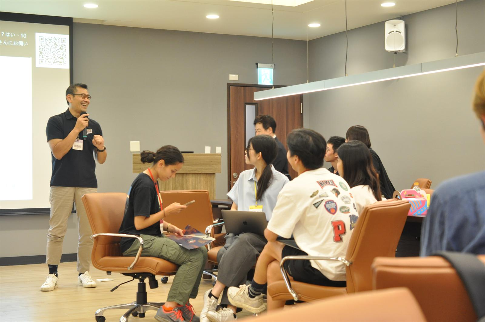
Day 2 | Into Nanao Fields: Native Garden Meditation & Sugarcane Harvesting
The morning began with meditation in the native botanical garden, practicing slowing down and reconnecting with the land through the five senses. Next, they visited A-Cong's organic farm to harvest sugarcane, squeeze juice, and craft bamboo cups, while learning about the region through indigenous cuisine and culture. In the afternoon, they utilized AI for desk research, organizing market data and designing interview outlines, gradually transforming their experience into framed problem definitions.
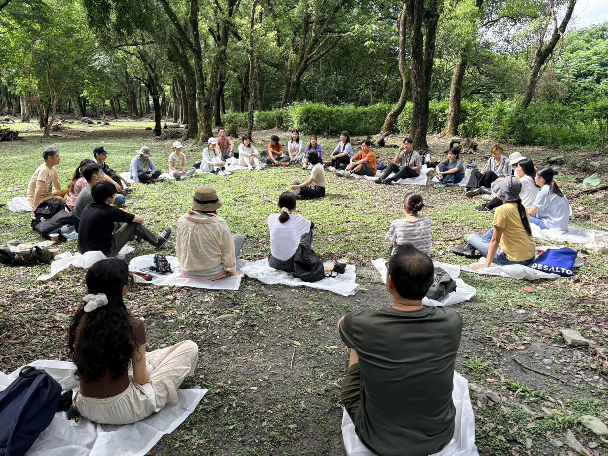
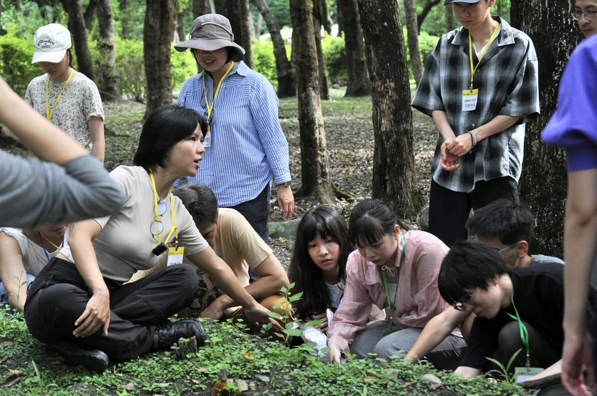
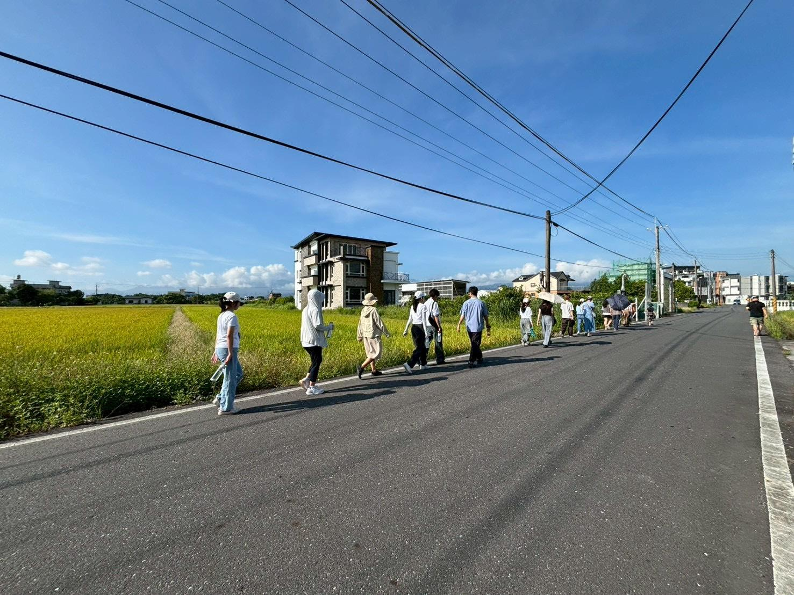
Day 3 | From Shuiyue Farm to Slow Island Life: Lotus Seed Harvesting & Rice Baking Experience
In the five-color paddy fields, lotus ponds, and black soybean fields of Shuiyue Farm, students learned about crops and natural farming through hands-on labor, as well as making rice balls and tasting lotus seed soup together. In the afternoon, they visited Slow Island Life to interview organic shop operators, inspect paddy fields, and experience straw weaving, understanding how agriculture connects with lifestyle choices, local management, and community relationships.
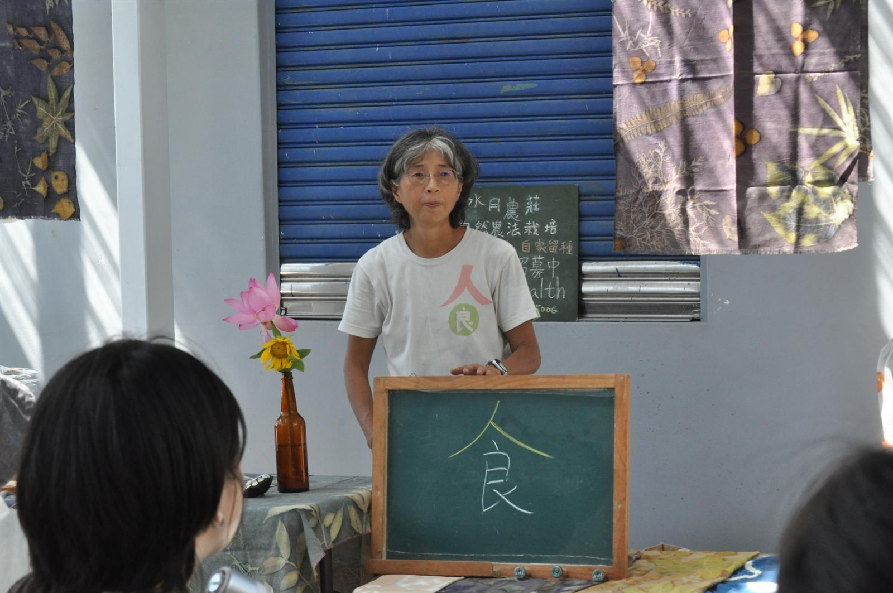
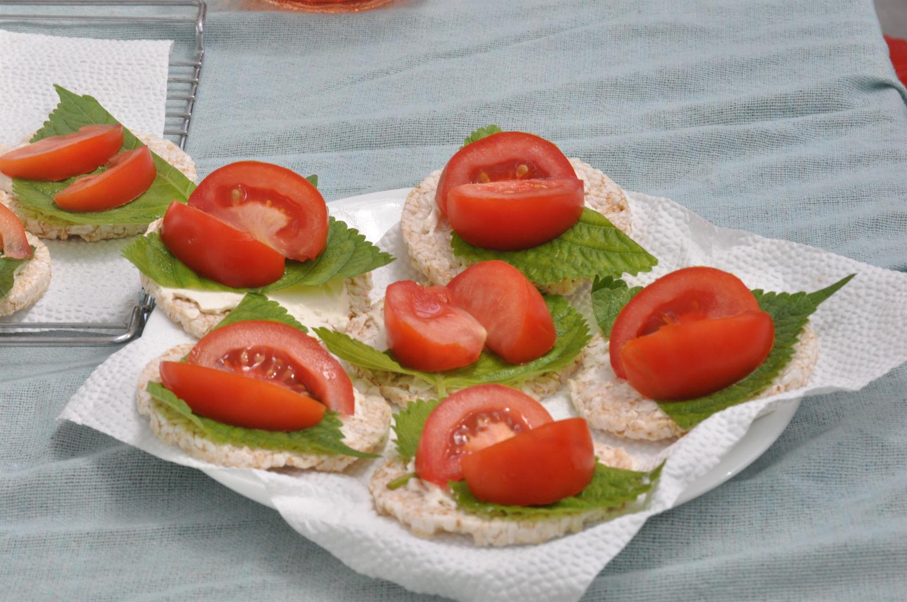
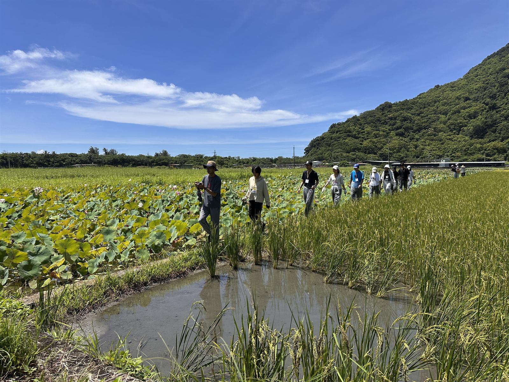
Day 4 | "Fishing" in Shengou: Deep Interview on Half-Farming, Half-X
Early in the morning, they entered the Shengou farming area, following ecological workers to conduct fish surveys in the rice paddies, understanding through observation and operation that farmlands are also critical ecological habitats. Next, they interviewed various "Half-Farming, Half-X" practitioners—including ecologists, engineers, and bakers—and hand-made rice-based baked goods. In the evening, each team used AI to organize interview materials, extract insights, and develop solutions.
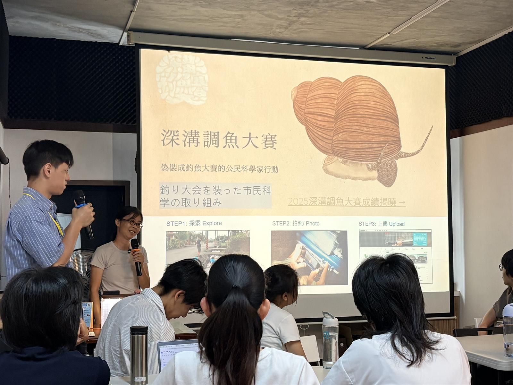
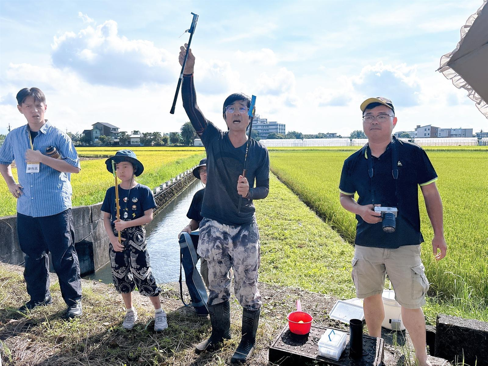
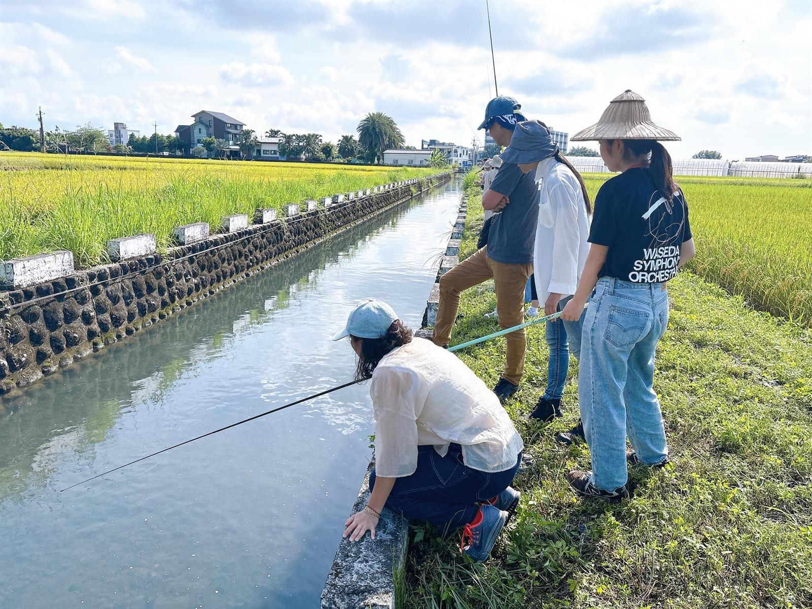
Day 5 | Planting Promises at Fo Guang University: Sustainable Tree Planting & Project Presentation
On the final day, a tree-planting activity symbolized heritage and commitment, leaving a lasting imprint of this five-day journey. Each team integrated field observations, interview data, and design thinking processes to present their project results and deliver presentations, receiving evaluations and feedback from experts. The graduation certificates represented not just the completion of the program, but an invitation for each participant to carry this experience back to their lives and continue practicing.
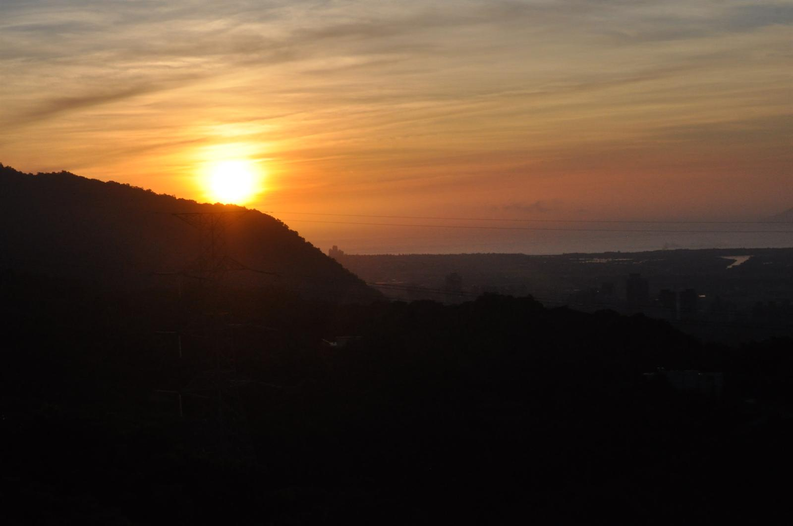
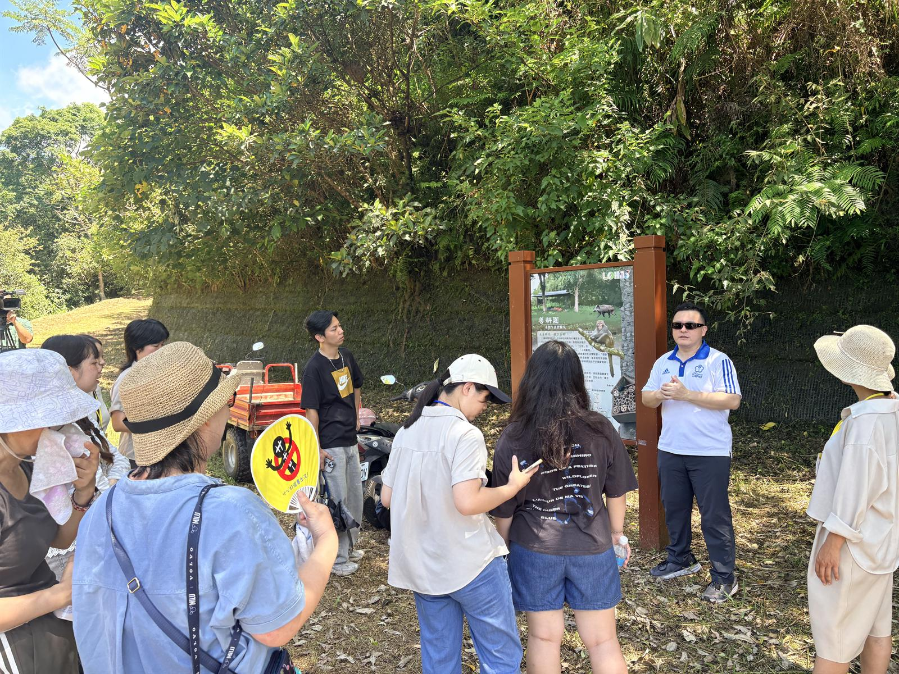
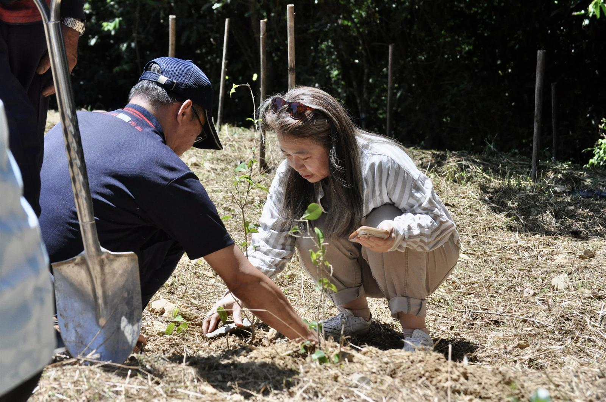
AI-Collaborative Design Thinking
Click on the cards below to explore our cross-border design thinking and AI-assisted practice guides
1. Discover / Context Research
DISCOVERImmerse in Yuanshan and Nanao, surveying fields and interviewing stakeholders to uncover real local needs.
2. Define / Problem Framing
DEFINEFocus on elder and parent pain points, utilizing AI coding to synthesize core design challenges HMW (How Might We).
3. Develop / Co-creation
DEVELOPCross-border brainstorming workshops between Waseda and NTHU students to draft and model low-fidelity prototypes.
4. Deliver / MVP Validation
DELIVERPresent and validate MVP outcomes addressing food, education, and local lifestyle.
Voices of Action
Ding Xin-lei
NTHU Student"Teacher Chang Ming-li's words 'medicine and food share the same origin' left a deep impression... Having someone share why she came here helped me realize how powerful the connection between people and the land is."
Uesugi Yuji
Waseda Advisor"Classroom learning is mental, but here students absorb natural energy physically... Despite our differing values, face-to-face interaction forms the foundation for future collaboration."
Igarashi Yuzuki
Waseda Student"This was my first time doing agriculture. Knowing that Shumei Natural Agriculture from Japan is practiced in Taiwan felt like a connection... It was also great to collaborate with foreign peers to solve problems."
Diao Yuan-ting
NTHU Student"I used to think rural areas were just aging and emptying out, but here I saw many youth returning to practice 'half-farming, half-X'... It surprised me and made me want to try it myself."
Zhao Shan-shan & Lyu Jia-an
NTHU Students
"Lyu Jia-an: First time waking up at 6:30 AM to walk so far... but this is daily life for farmers, they work so hard.
Zhao Shan-shan: Collaborative presentation with Japanese students in a short time was very rewarding."
Zheng Bo-hong
NTHU Student"These days were very fulfilling with field classes and interviews. The design thinking and AI sessions in the afternoons were also extremely helpful tools for us."
Coach Xu (Percy)
Agile Coach & Facilitator"It's rare to go directly into the field to observe, interact, and truly understand issues. This can't be learned in a classroom. I was also amazed by the limitless creativity of the students..."
Lai Yu-wen
Mentor, Tsing Hua University Leader Program"Having foreign students collaborate with us to solve real-world problems creates very deep exchanges... Hosting such an event with top-notch mentors and environment is far better than working in silos."
Media & Recognition
First "Terra School: Earth" Launched, Taiwan-Japan Youth Explore Sustainable Agriculture in Yilan
Terra School Cooperates with Fo Guang University in Taiwan-Japan Youth "Earth School" to Meditate on Sustainable Agriculture
Terra School Cooperates with Fo Guang University in Taiwan-Japan Youth "Earth School" to Meditate on Sustainable Agriculture
Taiwan-Japan Youth Enter Yilan Rural Fields: Terra School Joins Hands with FGU to Build "Earth School"
Terra School Cooperates with Fo Guang University in Taiwan-Japan Youth "Earth School" to Meditate on Sustainable Agriculture
Taiwan-Japan Youth Enter Yilan Rural Fields: Terra School Cooperates with Fo Guang University on "Earth School"
Organizer & Partners


Latest Intake Recruitment
"Terra School: Heaven School | Mountain Co-existence & Sustainable Mountain" is now open for applications! Click below to apply: